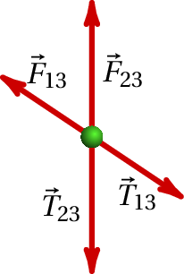
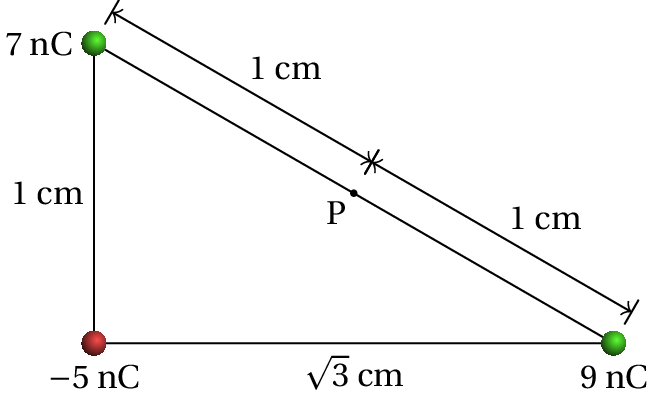

A fotografia mostra um gerador de
Wimshurst, inventado na década de 1880. Já no
século XVIII existiam máquinas eletrostáticas usadas para gerar cargas
eletrostáticas por atrito; a grande inovação de Wimshurst foi a
utilização da indução
eletrostática, permitindo acumular cargas muito mais elevadas por
meios mecânicos. Há diversos mecanismos envolvidos no funcionamento do
gerador de Wimshurst, que serão estudados nos próximos capítulos:
garrafa de Leiden, rigidez dielétrica, etc.
1.1. Cargas eletrostáticas
A acumulação de cargas eletrostáticas é um fenómeno que se manifesta
frequentemente na experiência quotidiana, especialmente nos dias em
que o ar está mais seco. Um exemplo em que surge esse fenómeno é
quando se coloca película aderente de plástico sobre uma tigela e se
esfrega o plástico sobre a tigela para que fique colado a esta. A ação
de esfregar o plástico origina transferência de cargas elétricas entre
o plástico e a tigela, ficando ambos com cargas eletrostáticas que
produzem força atrativa. Uma folha de acetato também acumula
facilmente cargas eletrostáticas, produzindo força atrativa sobre a
folha de papel que se costuma colocar debaixo do
acetato. Especialmente no verão, sentem-se por vezes choques elétricos
quando se toca um objeto metálico, por exemplo, a porta de um
automóvel, ou quando se aperta a mão de outra pessoa. O automóvel ou a
outra pessoa têm carga eletrostática e o choque elétrico sentido é
devido à passagem de alguma dessa carga através do corpo (corrente
elétrica).
Basta usar fita-cola para realizar em casa uma experiência para
estudar a transferência de cargas eletrostáticas. Pode ser útil também
usar dois lápis ou canetas. Corte aproximadamente 20 cm de fita e
cole-a à superfície de uma mesa, deixando uma pequena parte fora da
mesa para poder descolar a fita da mesa ficando pendurada livremente
no ar (evite que a parte livre toque os dedos ou outros objetos; pode
ajudar-se de uma caneta para segurá-la num extremo deixando o outro
livre).
Enquanto descolou a fita da mesa, algumas cargas elétricas foram
transferidas entre a cola e a mesa; a fita ficou com carga
eletrostática que manterá enquanto não tocar outros objetos. Repita o
mesmo procedimento com um segundo pedaço de fita, usando a mesma
mesa. Como os materiais são os mesmos nos dois casos, espera-se que as
duas fitas tenham o mesmo tipo de carga. Aproxime as duas fitas, sem
se tocarem e observe a força repulsiva entre cargas do mesmo tipo
(figura 1.1). Aproxime alguma das duas fitas de outros
objetos sem carga, por exemplo as paredes, de forma que o lado que se
aproxima do objeto seja sempre o que não tem cola, para evitar que
fique colada. Observe que as fitas com carga são atraídas pelos
objetos sem carga.
Figura 1.1: Força elétrica repulsiva.
Deite fora a fita já usada e prepare outros dois pedaços de fita, mas
desta vez cole um deles na mesa e o outro sobre o primeiro. Esfregue a
fita de cima e descole simultaneamente os dois pedaços da mesa e entre
si. Como a cola da fita de cima e o lado sem cola da fita de baixo são
dois materiais diferentes, uma das duas superfícies passará carga para
a outra, ficando as duas fitas com cargas de tipos diferentes (um com
falta de carga e o outro com excesso). Neste caso deve observar-se uma
força atrativa entre as duas fitas, tal como na figura 1.2,
por terem cargas de tipos diferentes (esta parte da experiência é mais
difícil, porque se quando a fita é descolada do rolo já tem carga
elétrica as duas fitas já têm no início carga do mesmo tipo, tornando
mais difícil conseguir que fiquem com cargas diferentes). Observe
também que cada uma das fitas, independentemente do tipo de carga que
tiver, é atraída por outros objetos sem carga.
Figura 1.2: Força atrativa entre fitas com cargas de tipos
diferentes.
1.2. Estrutura atómica
Toda a matéria é formada por átomos. Cada átomo tem um núcleo muito
compacto com dois tipos de partículas, protões
e neutrões (figura 1.3), rodeado por
uma nuvem eletrónica extensa, formada
por outro tipo de partículas muito mais pequenas, os
eletrões.
Figura 1.3: Átomo de lítio com 3 protões, 4 neutrões e nuvem de 3 eletrões.
Entre dois protões ou dois eletrões atua uma força repulsiva chamada
forçaelétrica. Entre um
protão e um eletrão atua também uma força elétrica, mas atrativa. A
intensidade da força entre dois protões, dois eletrões ou um eletrão e
um protão é a mesma, se a distância entre as partículas é igual nos 3
casos. Nos neutrões as outras partículas não exercem nunca nenhuma
força elétrica.
Conclui-se que existem dois tipos diferentes de carga, a dos protões e
a dos eletrões e que os neutrões não têm carga.
A força elétrica atua unicamente entre duas partículas com carga;
a força é repulsiva, se as cargas das partículas é do mesmo tipo, ou
atrativa se são de tipos diferentes.
Um átomo neutro (com igual número de protões e de eletrões) e não
polarizado (nuvem eletrónica com centro no núcleo), não produz forças
elétricas sobre outras partículas com carga. Admite-se assim que
protões e eletrões são partículas com cargas elétricas de sinal
contrário mas de igual valor absoluto, tendo-se convencionado que os
eletrões têm carga negativa e os protões carga positiva. Um conjunto
de partículas tem uma carga total igual à soma algébrica
das partículas individuais que a constituem.
A unidade SI usada para medir carga é o
coulomb, indicado com a letra C. Os
protões têm todos a mesma carga, chamada carga
elementar, com o seguinte valor:
(1.1)
Os eletrões têm também todos a mesma carga, exatamente igual a
.
1.3. Eletrização
É necessária uma energia muito elevada para conseguir remover um
protão, ou um neutrão, do núcleo de um átomo. Isso só acontece no
interior das estrelas ou na camada mais externa da atmosfera, onde
chocam partículas cósmicas com muita energia, ou nos aceleradores de
partículas onde as energias das partículas são suficientemente
elevadas. Para extrair um eletrão de um átomo neutro é necessária uma
energia muito menor, ficando então um ião
positivo com carga total igual a
. Um átomo neutro pode também
atrair um eletrão adicional, ficando então um ião negativo com carga
total igual a
.
Figura 1.4: Barra de vidro eletrizada esfregando-a
com um pano de seda.
Sempre que dois objetos diferentes entram em contacto próximo, há
eletrões de um dos objetos que passam para o outro. O objeto que for
mais susceptível de perder eletrões fica então eletrizado com carga
positiva (
protões em excesso) e o objeto que tiver menos tendência
para perder os seus eletrões fica com carga igual (em intensidade) mas
negativa (
eletrões em excesso), como no caso da
figura 1.4.
Nas experiências com fita-cola descritas no início do capítulo, a cola
ajuda a que a mesa e a fita entrem em contacto muito próximo, passando
eletrões de uma para a outra. Se a mesa e a fita estão inicialmente
descarregadas, após a separação entre elas uma fica com carga negativa
e a outra com carga positiva da mesma intensidade. A
fricção é também usada como método para
eletrizar objetos, por facilitar a passagem de eletrões de um objeto
para outro (figura 1.4).
Os diferentes materiais podem ser ordenados numa
série triboelétrica
(tabela 1.1), em que os,materiais no topo da série são mais
susceptíveis de ficar com carga positiva e os materiais no fim da
série têm maior tendência para ficar com carga negativa.
Tabela 1.1: Série triboelétrica.
Pele de animal
Vidro
Cabelo humano
Lã
Chumbo
Seda
Alumínio
Papel
Madeira
Cobre
Prata
Borracha
Acetato
Esferovite
Vinil (PVC)
Por exemplo, se uma barra de vidro for esfregada com um pano de seda,
a barra fica carregada positivamente e a seda negativamente, porque o
vidro está acima da seda, na série triboelétrica (ver
figura 1.4). Mas se a mesma barra de vidro for esfregada
com uma pele de animal, a barra fica com carga negativa e a pele com
carga positiva, porque a pele de animal está acima do vidro na série
triboelétrica.
1.4. Propriedades da carga
A carga elétrica é uma propriedade intrínseca da matéria, tal como a
massa. Uma diferença em relação à massa, é que existem
cargas de dois tipos bem como partículas sem carga. Duas propriedades
muito importantes da carga elétrica são a sua quantização e a sua
conservação.
1.4.1. Quantização da carga
Nos aceleradores de partículas são produzidas colisões entre
partículas com energias muito elevadas, que dão origem a muitas outras
novas partículas, diferentes dos eletrões, protões e neutrões. Todas
as partículas elementares conhecidas têm sempre uma carga que é um
múltiplo inteiro da carga elementar
(
C). Assim, a carga de qualquer objeto é sempre
um múltiplo inteiro da carga elementar.
Nas experiências de eletrostática, as cargas produzidas correspondem
normalmente a um número muito elevado de cargas elementares. Nesse
caso é boa aproximação admitir que a carga é uma variável continua e
não discreta.
1.4.2. Conservação da carga
Em qualquer processo, a carga total inicial é igual à carga total
final. Nos processos de transferência de eletrões entre átomos, esse
resultado é óbvio, mas em processos com criação de novas partículas
nada indica que tivesse de ser assim. Contudo, em todos os processos
observados nos raios cósmicos e nos aceleradores de partículas, há
conservação da carga; nos processos em que
uma partícula se desintegra dando origem a outras partículas, a soma
das cargas de todas as partículas criadas é sempre igual à carga da
partícula inicial.
1.5. Força entre cargas pontuais
No século XVIII, Benjamin Franklin descobriu
que as cargas elétricas distribuídas na superfície de um objeto
metálico podem exercer forças elétricas significativas sobre corpos no
exterior do objeto, sem no entanto exercerem qualquer força sobre
corpos colocados no interior do mesmo.
No século anterior, já Isaac Newton tinha
demonstrado de forma matemática que a força gravítica produzida por
uma casca oca é nula no seu interior. Esse resultado é consequência da
forma como a força gravítica entre partículas diminui em função do
quadrado da distância.
Franklin concluiu então que a força elétrica entre partículas com
carga deveria ser também proporcional ao inverso do quadrado da
distância entre as partículas. Vários anos após o trabalho de
Franklin, Charles Coulomb fez experiências para
estudar com precisão a intensidade da força eletrostática entre duas
cargas pontuais (uma carga pontual é um objeto
muito pequeno com carga eletrica).
A lei de Coulomb estabelece que a linha
de ação da força elétrica entre duas cargas pontuais
e
é a
linha que passa pelos seus centros e a sua intensidade (
) é
diretamente proporcional ao valor absoluto de cada uma das cargas e
inversamente proporcional ao quadrado da distância entre os seus
centros:
(1.2)
onde
é a distância entre as cargas (figura 1.5) e
e
são os valores das duas cargas. A
constante de Coulomb
é uma
constante universal com o valor:
(1.3)
As forças elétricas exercidas sobre as duas cargas têm a mesma direção
e o mesmo módulo
, mas são em sentidos opostos (forças de ação e
reação). Se os sinais das duas cargas são iguais, as forças são
repulsivas, como no lado esquerdo da figura 1.5, e os seus
sinais são diferentes, as forças são atrativas, como mo la do direito
da figura 1.5.
Figura 1.5: Força elétrica entre duas cargas pontuais, do mesmo sinal
(esquerda) ou de sinais diferentes (direita).
A constante
(que não deve ser confundida com
), sem unidades, é
a constante dielétrica do meio
existente entre as duas cargas. A constante dielétrica do vácuo é 1 e
a constante dielétrica do ar tem um valor muito próximo desse, pelo
que, se o ar for o meio existente entre as cargas, se pode eliminar
da equação. Meios diferentes do ar têm constantes dielétricas com
valores superiores à unidade, pelo que a força elétrica entre cargas
pontuais é menor em meios diferentes do ar.
Exemplo 1.1
Considere três cargas pontuais positivas ligadas por fios que formam
um triângulo retângulo, como mostra a figura. (a) Qual a tensão
no fio que liga as cargas de 7.4 nC e 9.3 nC? (b) Se a carga de
5.6 nC fosse retirada, a tensão calculada na alínea a aumentava
ou diminuía?

Resolução. (a) O diagrama de forças sobre a partícula
de carga 7.4 nC (designada de partícula número 3) é apresentado na
figura à direita, onde
e
são as forças
eletrostáticas produzidas pelas partículas 1 e 2, de cargas 9.3 nC e
5.6 nC respetivamente, e
e
são as
tensões nos fios que ligam a partícula 3 a essas duas cargas. Para que
a partícula permaneça em equilíbrio é necessário que:
Antes de fazer contas, é conveniente escrever o valor da constante
nas unidades usadas no problema (nC e cm):
Admitindo que há ar à volta das cargas, a tensão no fio que liga as
cargas 1 e 3 é:
(b) O valor da tensão permanecia igual, pois como se mostrou na
alínea anterior, neste caso,
não depende da força
produzida pela partícula de 5.6 nC.
1.6. Campo elétrico
Uma forma de interpretar a força eletrostática entre duas partículas
com carga consiste em admitir que cada carga elétrica cria à sua volta
um campo de forças que atua sobre outras partículas com carga. Se
colocarmos uma partícula com carga
num ponto onde existe um
campo elétrico, o resultado será uma
força elétrica
sobre a partícula; o campo elétrico
define-se como a força sobre a partícula, por unidade de carga:
(1.4)
Como tal, o campo elétrico num ponto é igual à força elétrica que
sentiria uma carga unitária positiva colocada nesse ponto.
De forma inversa, sabendo que num ponto existe um campo elétrico
, a força elétrica que atua sobre uma partícula com carga
colocada nesse ponto calcula-se multiplicando a carga pelo campo:
. Basta conhecer o campo para calcular a força;
não é necessário saber quais as cargas que deram origem a esse
campo. Em unidades SI, o campo elétrico mede-se em newton por coulomb
(N/C).
Como vimos, a força elétrica produzida por uma carga pontual positiva
sobre uma segunda carga de prova
positiva é sempre uma força
repulsiva, cuja intensidade diminui proporcionalmente com o quadrado
da distância. Assim, o campo elétrico produzido por uma carga pontual
positiva
é representado por vetores com direção radial e sentido a
afastar-se da carga, como se mostra no lado esquerdo da
figura 1.6.
Figura 1.6: Campo elétrico devido a uma carga pontual positiva
e
representação com linhas de campo elétrico.
Uma forma mais conveniente de representar esse campo vetorial é
através das linhas de campo, como no
lado direito da figura 1.6. Em cada ponto, a linha de campo
que passa por esse ponto aponta na direção do vetor campo elétrico
nesse ponto. A intensidade do campo elétrico é maior nas regiões onde
as linhas de campo estão mais próximas umas das outras.
Para determinar o valor do campo elétrico produzido pela carga pontual
num ponto, coloca-se uma carga de prova
nesse ponto,
determina-se a força elétrica
, e divide-se pela carga
. Usando a lei de Coulomb, obtém-se o seguinte resultado para o
módulo do campo elétrico produzido pela carga
(1.5)
onde
é a distância do ponto à carga
. O sinal da carga
indica se o campo é repulsivo (
) ou atrativo (
).
O campo elétrico criado por uma única carga pontual é demasiado fraco
para ser observado. Os campos observados experimentalmente são a soma
vetorial dos campos criados por muitas cargas pontuais e o campo resultante
pode ter linhas de campo curvilíneas como no exemplo da
figura 1.7.
Figura 1.7: Exemplo de linhas de campo elétrico.
Para calcular o campo elétrico de cargas não pontuais, a região onde
existe carga pode ser dividida em muitas regiões infinitesimalmente
pequenas, que possam ser consideradas cargas pontuais, e o campo total
é a sobreposição dos campos de todas as cargas infinitesimais. A soma
dos campos de várias cargas infinitesimais conduz a um integral. O
estudo desse método para calcular campos encontra-se para além dos
objetivos deste livro introdutório, mas no
apêndice B ilustra-se o cálculo do campo por
integração, num caso concreto que será útil num capítulo seguinte.
Exemplo 1.2
Num certo ponto, a força sobre uma carga de prova de 5 nC é de
N e tem a direção e sentido do eixo dos
. Calcule o campo elétrico nesse ponto. Qual seria a força exercida
sobre um eletrão nesse mesmo ponto?
Resolução. A partir da força calcula-se o campo:
A força elétrica sobre um eletrão nesse ponto seria:
1.7. Condutores e isoladores
Em alguns materiais, como nos metais, o eletrão mais externo de alguns
átomos consegue libertar-se do átomo e deslocar-se livremente pelo
material; existe assim uma "nuvem" densa de eletrões livres
(eletrões de condução), com densidade
constante se o material for homogéneo. Esse tipo de material é
designado de condutor. Um material que não
seja condutor diz-se isolador; dentro de um
isolador, as cargas elétricas não se podem deslocar livremente.
Se um condutor é colocado numa região onde existe campo elétrico, como
a nuvem eletrónica de condução tem carga negativa, desloca-se no
sentido oposto às linhas de campo. O deslocamento dos eletrões de
condução faz surgir carga negativa num extremo (excesso de eletrões) e
carga positiva no extremo oposto (falta de eletrões). Se a carga total
do condutor é nula, o valor absoluto dessas cargas nos extremos será
igual. Essas cargas de sinais opostos nos extremos opostos do condutor
produzem um campo elétrico interno, no sentido oposto ao campo externo
e quando as cargas acumuladas nos extremos sejam suficientemente
elevadas, dentro do condutor os dois campos se anulam e o movimento
dos eletrões de condução cessa.
A figura 1.8 mostra uma barra com carga positiva, colocada
na proximidade de uma esfera condutora montada num suporte isolador; a
nuvem eletrónica de condução na esfera aproxima-se da barra, deixando
carga positiva na região mais afastada da barra e a mesma quantidade
de carga negativa na região mais próxima da barra. Se o suporte não
fosse isolador, entravam no condutor eletrões do suporte e as cargas
positivas indicadas na figura desapareciam.
Figura 1.8: Efeito de uma barra com carga sobre uma esfera condutora.
Se a barra tivesse carga negativa, em vez de positiva, as posições das
cargas positivas e negativas na esfera seriam trocadas. Uma vez
acumuladas cargas de sinais opostos nos extremos da esfera, o campo
elétrico total dentro da esfera é nulo; como tal, as linhas de campo
não penetram na esfera e os eletrões de condução dentro da esfera não
sentem qualquer força elétrica. Nos dois casos (barra com carga
positiva ou negativa), as cargas na superfície da esfera mais próxima
da barra são atraídas para a barra e essa atração é maior do que a
repulsão sobre as cargas na superfície mais afastada da barra. Como tal,
qualquer objeto externo com carga de qualquer sinal produz sempre uma
força atrativa nos condutores com carga total nula.
Se a mesma experiência é realizada com uma esfera isoladora
(figura 1.9), não há acumulação de cargas nos extremos;
consequentemente, o campo no interior da esfera não se anula e todas
as moléculas dentro dela são polarizadas,
nomeadamente, a sua própria nuvem eletrónica desloca-se no seu
interior, no sentido oposto do campo. Neste caso (barra com carga
positiva), a nuvem eletrónica das moléculas deixa de estar centrada no
mesmo ponto das cargas positivas, passando a estar centrada num ponto
mais próximo da barra; cada molécula torna-se um pequeno
dipolo elétrico, que é um sistema com
carga total nula, mas com as cargas positivas e negativas em pontos
diferentes.
Figura 1.9: Efeito de uma barra com carga sobre uma esfera isoladora.
A figura 1.9 mostra alguns dipolos dentro da esfera. O lado
dos dipolos que está mais próximo da barra tem sempre carga de sinal
oposto ao da carga na barra. Consequentemente, a força resultante em
cada dipolo é atrativa e a sobreposição de todas essas forças faz com
que a esfera seja atraída para a barra. Ou seja, um material isolador
sem carga é sempre atraído pelos objetos com carga, independentemente
do sinal da carga desses objetos.
1.8. Eletrização por indução
Um método usado para carregar dois condutores isolados, ficando com
cargas idênticas mas de sinais opostos, é o método de carga por
indução ilustrado na
figura 1.10.
Figura 1.10: Procedimento usado para carregar dois condutores com cargas
iguais mas de sinais opostos.
Os dois condutores isolados são colocados em contacto e aproxima-se de
um deles um objeto carregado, como indicado na
figura 1.10. O campo elétrico produzido pelo objeto
carregado induz uma carga de sinal oposto no condutor mais próximo e
uma carga do mesmo sinal no condutor mais afastado. Em seguida,
mantendo o objeto carregado fixo, separam-se os dois
condutores. Finalmente, afasta-se o objeto carregado, ficando os dois
condutores com cargas opostas (iguais em valor absoluto se nenhuma das
esferas tiver carga inicialmente). Em cada condutor as cargas
distribuem-se pela superfície, devido à repulsão entre elas, mas as
cargas dos dois condutores já não podem recombinar-se por não existir
contacto entre eles.
No gerador de Wimshurst, usa-se esse método para gerar cargas de
sinais opostos. Os condutores que entram em contacto são duas pequenas
lâminas metálicas diametralmente opostas sobre um disco isolador,
quando passam por duas escovas metálicas ligadas a uma barra metálica
(figura 1.11). As duas lâminas permanecem em contacto apenas
por alguns instantes, devido a que o disco roda.
Figura 1.11: Gerador de Wimshurst.
Se no momento em que duas das lâminas de um disco entram em contacto
uma lâmina do disco oposto estiver carregada, essa carga induzirá
cargas de sinais opostos nas duas lâminas que entraram em
contacto. Essas cargas opostas induzidas em duas regiões do disco
induzem também cargas no disco oposto, porque nesse disco também há
uma barra que liga temporariamente as lâminas diametralmente opostas.
Em cada disco, após induzirem cargas no disco oposto, as cargas saltam
para dois coletores ligados a duas garrafas metálicas; uma das
garrafas armazena carga positiva e a outra carga negativa. Quando as
cargas acumuladas nas garrafas forem elevadas produz-se uma descarga
elétrica entre as pontas de duas barras ligadas às garrafas, ficando
descarregadas. Essa descarga elétrica é um pequeno trovão com uma
faísca bastante luminosa.
Os dois discos rodam em sentidos opostos; as escovas que estabelecem o
contacto entre lâminas e os dois coletores estão colocados de forma a
que na rotação de cada disco, cada lâmina passa primeiro frente à
escova, onde troca carga com a lâmina na escova oposta, a seguir passa
frente a uma das escovas no disco do outro lado, induzindo cargas nas
lâminas do disco oposto e logo passa frente ao coletor, ficando
descarregada e pronta para reiniciar o ciclo.
A cada ciclo as cargas induzidas aumentam, porque cada lâmina é
induzida pelas cargas de várias lâminas no disco oposto. Para iniciar
o processo basta com que uma das lâminas tenha adquirido alguma carga,
embora seja muito reduzida, a partir do ar ou pela fricção com as
escovas. O sinal dessa carga inicial determina qual das garrafas
acumula carga positiva e qual negativa.
Perguntas
(Para conferir a sua resposta, clique nela.)
Uma barra com carga positiva é colocada perto de uma folha de papel
com carga nula. A força que a barra exerce sobre o papel é então:
Atrativa.
Repulsiva.
Nula.
Atrativa
ou repulsiva, conforme a barra seja condutora ou
isoladora.
Atrativa
se o papel estiver seco ou nula se estiver húmido.
O que distingue um condutor elétrico de um isolador é:
Ter
mais eletrões do que protões.
Ter
mais protões do que eletrões.
Ter
mais eletrões do que o isolador.
Ter
moléculas que se deformam mais facilmente.
Ter
algumas partículas com carga livres de se deslocar.
Colocam-se três cargas no eixo dos
:
µC, em
m,
µC, em
,
µC, em
m.
Determine o módulo da força elétrica resultante sobre
.
N
N
0
N
N
Três esferas idênticas e condutoras, isoladas, uma delas com carga
e as outras duas sem carga, colocam-se em contacto, cada uma delas
tocando as outras duas e a seguir separam-se. Qual das seguintes
afirmações é correta?
Todas
as esferas ficam sem carga.
Cada
uma delas fica com carga
.
Duas
delas ficam com carga
e outra com carga
.
Cada
uma delas fica com carga
.
Uma
delas fica com carga
e outra com carga
.
Uma esfera metálica montada num suporte isolador liga-se à terra com
um fio condutor e a seguir aproxima-se uma barra de plástico com carga
positiva. A ligação da esfera à terra é retirada e a seguir afasta-se
a barra de plástico. Com que carga fica a esfera metálica?
Nula.
Positiva.
Negativa.
Diferente
de zero, mas não é possível saber o sinal.
Positiva
num extremo e negativa no extremo oposto.
Problemas
Uma lâmina de acetato, eletrizada por fricção, coloca-se 1 cm acima de
uma mesa onde há vários quadrados de papel, cada um com 0.5 cm de
lado. Observa-se que alguns pedaços de papel saltam, ficando colados
ao acetato. Faça uma estimativa da ordem de grandeza da carga do
acetato, admitindo que uma carga idêntica e de sinal oposto é induzida
em cada pedaço de papel e sabendo que o papel usado tem 80 g/m2.
A soma dos valores de duas cargas pontuais
e
é
µC. Quando estão afastadas 3 m entre si, o módulo da
força exercida por cada uma delas sobre a outra é 24 mN. Determine os
valores de
e
, se: (a) Ambas cargas são
positivas. (b) Uma das cargas é positiva e a outra negativa.
Sabendo que num átomo de hidrogénio a distância entre o protão no
núcleo e o eletrão é
m, determine o módulo
do campo elétrico devido ao núcleo, no ponto onde está o eletrão.
O campo elétrico na atmosfera terrestre tem intensidade de
aproximadamente 150 N/C e aponta na direção e sentido do centro da
Terra. Calcule a relação
entre o peso de um eletrão e o módulo da força elétrica oposta
exercida pelo campo elétrico da atmosfera (a massa do eletrão é
kg e admita que a aceleração da gravidade é
m/s2).
Três cargas pontuais estão ligadas por dois fios isoladores de 2.65 cm
cada (ver figura). Calcule a tensão em cada fio.
Entre duas placas paralelas de cargas opostas existe um campo elétrico
uniforme. Um eletrão libertado na superfície da placa carregada
negativamente é acelerado uniformemente, a partir do repouso, em
direção à placa carregada positivamente (o peso do eletrão pode ser
desprezado em comparação com a força elétrica e admite-se que as
placas se encontram dentro de um tubo sob vácuo). Sabendo que a
distância entre as placas é de 2.0 cm e que o eletrão demora 15 µs até
bater na outra placa: (a) Determine o módulo do campo
elétrico (a massa do eletrão é
kg); (b)
Qual a velocidade com que o eletrão atinge a placa positiva?
Um sistema de três cargas pontuais está em equilíbrio (a força
eletrostática resultante sobre cada carga é nula). Se os valores de
duas das cargas são
e
, separadas por uma distância
,
determine o valor e a posição da terceira carga.
Determine a força elétrica resultante sobre cada uma das cargas
representadas na figura e o campo elétrico produzido pelas 3 cargas no
ponto P.

Duas pequenas esferas condutoras, com cargas
nC e
nC, e com a mesma massa
, são coladas a dois fios, cada
um com 8 cm de comprimento. Os fios são logo colados numa barra
horizontal, em dois pontos a uma distância
cm entre si. A
repulsão eletrostática entre as cargas faz com que os dois fios se
inclinem um ângulo
= 10° em relação à vertical. Determine
o valor da massa
.
Respostas
Perguntas:1. A. 2. E. 3. E.
4. D. 5. C.
Problemas
Ordem de grandeza de
C.
(a) 6 µC, e 4 µC (b) 12 µC, e
µC.
N/C.
A força eletrostática é
vezes maior que o peso.
A tensão no fio do lado esquerdo é 285 µN e no fio do lado direito 560
µN.
(a)
N/C (b)
m/s.
A terceira carga é
, e encontra-se no segmento de recta entre as
outras duas cargas, a uma distância
da carga
.
Com origem na carga
nC, eixo dos
na direção de
nC, e eixo dos
na direção de
nC, as forças são:
mN
mN
mN
O campo em P é:
N/µC
24.7 g.
Pergunta 1, resposta A: Certa
Cada molécula do papel é polarizada, ficando as cargas negativas mais
próximas da barra e, portanto, a repulsão sobre as cargas positivas de
cada molécula será menor do que a atração sobre as cargas negativas.
(clique para continuar)
Pergunta 1, resposta B: Errada
Os núcleos dos átomos do papel (positivos) são repelidos pela carga
positiva da barra, mas também há forças atrativas a atuar nos eletrões
dos átomos.
(clique para continuar)
Pergunta 1, resposta C: Errada
Os núcleos e eletrões dos átomos nas moléculas do papel sentem forças
em sentido oposto, mas a resultante não será nula porque as moléculas
são polarizadas (afastamento de cargas positivas e negativas) pelo
campo da barra.
(clique para continuar)
Pergunta 1, resposta D: Errada
Como o enunciado diz que a barra tem carga, se esta for condutora,
estará isolada. O sentido das linhas de campo da barra só depende do
sinal das cargas nela e não do tipo de material da barra.
(clique para continuar)
Pergunta 1, resposta E: Errada
O papel húmido é melhor condutor que o papel seco, mas tanto nos
condutores como nos isoladores, o sentido da polarização das cargas
dentro de um material neutro é o mesmo (depende apenas do sentido do
campo elétrico externo).
(clique para continuar)
Pergunta 2, resposta A: Errada
Todos os materiais neutros, independentemente de serem condutores ou
isoladores têm igual número de eletrões do que protões. E todos os
materiais carregados terão eletrões ou protões em excesso (depende do
sinal da carga total). O sinal das cargas em excesso não serve para
distinguir condutores de isoladores.
(clique para continuar)
Pergunta 2, resposta B: Errada
Todos os materiais neutros, independentemente de serem condutores ou
isoladores têm igual número de eletrões do que protões. E todos os
materiais carregados terão eletrões ou protões em excesso (depende do
sinal da carga total). O sinal das cargas em excesso não serve para
distinguir condutores de isoladores.
(clique para continuar)
Pergunta 2, resposta C: Errada
O número de eletrões num material tem mais a ver com o número de
átomos e o número atómico de cada um desses átomos. Esse número não
serve como critério para distinguir condutores de isoladores.
(clique para continuar)
Pergunta 2, resposta D: Errada
Num condutor as cargas em excesso distribuem-se na superfície,
mantendo as moléculas imunes ao efeito do campo elétrico. Assim, as
moléculas dentro de um condutor não são polarizadas e não interessa a
facilidade com que elas sejam deformadas.
(clique para continuar)
Pergunta 2, resposta E: Certa
Essa é a caraterística que define um condutor.
(clique para continuar)
Pergunta 3, resposta A: Errada
Há que calcular os módulos das forças entre as cargas
e
e
entre as cargas
e
(usando a lei de Coulomb), e
subtraí-los, porque as duas forças são vetores com a mesma direção,
mas sentidos opostos.
(clique para continuar)
Pergunta 3, resposta B: Errada
Há que calcular os módulos das forças entre as cargas
e
e
entre as cargas
e
(usando a lei de Coulomb), e
subtraí-los, porque as duas forças são vetores com a mesma direção,
mas sentidos opostos.
(clique para continuar)
Pergunta 3, resposta C: Errada
As forças produzidas pelas outras duas cargas têm sentidos opostos,
mas não se anulam porque têm módulos diferentes.
(clique para continuar)
Pergunta 3, resposta D: Errada
Há que calcular os módulos das forças entre as cargas
e
e
entre as cargas
e
(usando a lei de Coulomb), e
subtraí-los, porque as duas forças são vetores com a mesma direção,
mas sentidos opostos.
(clique para continuar)
Pergunta 3, resposta E: Certa
Há que calcular os módulos das forças entre as cargas
e
e
entre as cargas
e
(usando a lei de Coulomb), e
subtraí-los, porque as duas forças são vetores com a mesma direção,
mas sentidos opostos.
(clique para continuar)
Pergunta 4, resposta A: Errada
A carga final não pode ser nula. A conservação da carga implica que a
soma das cargas no fim deve ser igual à carga inicial
.
(clique para continuar)
Pergunta 4, resposta B: Errada
Como a carga total inicial era
, a conservação da carga implica que
a soma das 3 cargas no fim deverá ser igual à carga inicial
.
(clique para continuar)
Pergunta 4, resposta C: Errada
Se assim fosse, a carga final seria
, que não é igual
à carga total inicial,
.
(clique para continuar)
Pergunta 4, resposta D: Certa
A soma das 3 cargas deverá ser igual à carga inicial. As 3 esferas em
contacto atuam como um único condutor, em que a carga total
distribui-se pela sua superfície. Como as esferas são iguais, por
simetria, na superfície de cada uma fica a mesma carga. No capítulo 7
demonstra-se que se as esferas tivessem raios diferentes, as cargas
nelas não seriam iguais.
(clique para continuar)
Pergunta 4, resposta E: Errada
A carga total final não pode ser 0, porque a conservação da carga
implica que deverá ser igual à carga inicial
.
(clique para continuar)
Pergunta 5, resposta A: Errada
Quando a barra é aproximada ao condutor, são transferidas cargas
negativas da terra para o condutor. A eliminação da ligação à terra
faz com que essas cargas fiquem no condutor, sem poderem regressar
para a terra.
(clique para continuar)
Pergunta 5, resposta B: Errada
Como no fim o condutor está isolado, as cargas que tiver já deveriam
estar lá quando o condutor estava ligado à terra. Se no condutor
ligado à terra houver cargas positivas, a força repulsiva produzida
nelas pela barra afastá-las-ia para a terra, fora do condutor.
(clique para continuar)
Pergunta 5, resposta C: Certa
Quando a barra é aproximada ao condutor, transfere-se carga negativa
da terra para o condutor (e a terra adquire cargas positivas). Quando
se afasta a barra, essas cargas não podem recombinar-se novamente,
porque nesse momento já não há ligação à terra e, como tal, não podem
haver passagem de cargas entre a terra e o condutor.
(clique para continuar)
Pergunta 5, resposta D: Errada
Quando a barra é aproximada ao condutor, são transferidas cargas
negativas da terra para o condutor. Se a carga da barra fosse
negativa, seriam transferidas cargas positivas para o condutor.
(clique para continuar)
Pergunta 5, resposta E: Errada
No fim a barra já foi afastada, assim que qualquer carga que houver no
condutor, independentemente do sinal, será distribuída por toda a sua
superfície.


Cada molécula do papel é polarizada, ficando as cargas negativas mais próximas da barra e, portanto, a repulsão sobre as cargas positivas de cada molécula será menor do que a atração sobre as cargas negativas.
(clique para continuar)